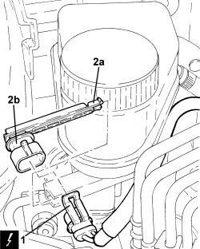

3330C44 BRAKE FLUID MINIMUM W/L SWITCH - R + R
- Path
- Procedures > 33 BRAKES > 3330 HYDRAULIC BRAKING SYSTEM > 3330C BRAKE PUMP, RESERVOIR AND LOAD PROPORTIONING VALVE > 3330C44 BRAKE FLUID MINIMUM W/L SWITCH - R + R
- Kind
- repair procedure (removal / refitting; the operation number is the code)
- Applies to
- all engines; all production periods
- Interactive page
- https://sloeber94.github.io/elrnDB-aBrrSpdr/en/#/946002134
Applies to: all engines; all production periods
 Removing
Removing
 Refitting
Refitting1. Disconnect the electrical connection from the brake fluid minimum warning light switch.
Description | Connector | |
|---|---|---|
1 | Brake fluid level sensor (switch) |
2. Press the clips (2a) and disconnect the minimum brake fluid warning light switch (2b).

Applies to: all engines; all production periods
Refitting
Removing- Place the brake fluid minimum level warning light switch in its housing and connect the connection.